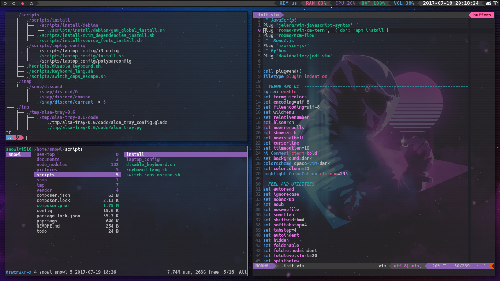

Program, který si koupíme, dostaneme na CD/DVD dis-ku, nebo si ho
stáhneme z Internetu. Po vložení instalačního CD/DVD disku se většinou
okamžitě spustí instalační program (díky souboru autorun.inf), v
pří-padě softwaru staženého z Internetu musíme instalační program
spustit sami (ve Windows nejčastěji poklepáním na soubory install.exe či
setup.exe). Prů-vodce instalací (wizzard) si často vyžádá sériové číslo
a souhlas s licenčními podmínkami, zeptá se, kam (do jaké složky na
disku) se má program uložit a kam se má umístit zástupce programu,
případně žádá další informace. Potom instalační program nahraje všechny
soubory, ze kterých se program skládá, na pevný disk počítače, provede
nutnou konfiguraci (v systémovém registru Win-dows, konfiguračních
souborech) a nakonec vytvoří zástupce programu pro jeho snadné spuštění.
K instalaci většiny programů je nutné mít práva správce.
Úplné odebrání programu bývá paradoxně často složitější, zvláště v
systémech Windows. Při instalaci si program nahraje své komponenty do
mnoha složek včetně systémových, sdílí některé soubory s jinými programy
(dynamické knihovny DLL), vytvoří záznamy v tzv. registru, při svém běhu
vytváří pomocné soubory. Program, zajišťující odinstalování aplikace,
často neví přesně, kde všude jsou programové soubory uložené a všechny
je nesmaže. V řadě případů tak dochází k hromadění zbytečných a
nepoužívaných souborů. Pro jejich odstranění lze používat některé
speciální utility – např. RegCleaner (program pro čištění registrů). Při
podobných ope-racích je však nutné postupovat velmi obezřetně, aby
nedošlo k odstranění některé důležité součásti systému nebo používaného
programu! V linuxových systémech je lépe vyřešeno oddělení systémových a
uživatelských souborů, úplné odstranění nepotřebného programu je proto
pravděpodobnější.
Lokalizace je překlad programu, v našem případě do češtiny. Většina
významných softwarových firem pochází z anglicky mluvících zemí a
originály programů tedy existují v angličtině. Dnes je však zcela běžné,
že tyto firmy mají místní zastoupení, která zajišťují prodej programů,
ale také je před prodejem lokalizují - převedou do češtiny. Lokalizace
je drahá a časově nároč-ná činnost, protože se musí přeložit nejen volby
nabídek a obsah dialogových oken, ale také nápověda k programu a návod k
programu (manuál), případně vytvořit dělicí slovník pro české dělení
slov a český korektor pravopisu.
V souvislosti s určitým typem OS i typem proce-soru používáme pojem
platforma - např. Windows, Linux, OS X. Používaný program musí být určen
pro operační systém, který je na počítači nainstalo-ván; pod jiným
systémem většinou nepracuje (např. program určený pro MS Windows nebude
pracovat pod Linuxem a naopak). Mnoho programů, zvláš-tě z oblasti
svobodného software (free software), má proto verze určené pro několik
operačních systémů – jsou multiplatformní. Problémy se spuštěním
programu však mohou nastat i na jedné platformě v souvislosti s různými
verzemi OS i rozdíly mezi 32bitovými a 64bitovými systémy (například
nový program určený pro MS Windows může spolehlivě fungovat v novějších
verzích Windows, ale nemusí pracovat pod starší verzí stejného OS). Při
pořizování programu si proto vždy musíme ověřit, zda je kompatibilní (ve
funkční shodě) s námi používaným operačním systémem. V nových systémech
Windows je v případě problémů možné využít nastavení na kartě
Kompatibilita, která je součástí panelu Vlastnosti pro zástupce dané
aplikace.
U počítačových programů je důležitá jeho verze, která se označuje číslem
za názvem programu. Nový program může být například označen jako verze
1.0. Některé dodatečně zjištěné dílčí nedostatky nebo bezpečnostní
problémy řeší aktualizace programu (dnes nejčastěji přes Internet),
update. Aktualizace jsou zakázníkům, kteří si zakoupili určitou verzi
programu, obvykle poskytovány bezplatně. Pro přehlednost jsou označovány
buď datem vydání, nebo symbolickým číselným vyjádřením podverze – např.
1.1 nebo 1.23 apod. Povýšení na novou verzi (např. 2.0), upgrade,
přináší významnější změny ve vývoji programu a v případě komerčního
software je třeba vyšší verzi znovu zaplatit. Bývá pravidlem, že nové
verze mají nové funkce a lepší ovládá-ní, ale také vyšší nároky na výkon
počítače. Před provedením upgrade je tedy nutné zjistit doporučenou
(případně minimální) konfiguraci počítače, aby bylo možné program na
daném počítači možné vůbec používat. Opačný postup, tedy použití nižší
verze programu (např. kvůli nekompatibilitě s instalovaných OS nebo
nedostatečnou konfigurací počítače), se nazývá downgrade.
Registrace programu je zaevidování jeho uživatele do databáze výrobce
pro-gramu. Registrace je nepovinná a přináší většinou několik výhod:•
nárok na upgrade programu za sníženou cenu; uživatel se často včas dozví
o časově omezených nabídkách výhodného nákupu upgradu nebo dalších
pro-gramů od stejné firmy;• někteří výrobci programů posílají svým
registrovaným uživatelům materiály (časopisy, prospekty), kde se dozvíte
zkušenosti jiných uživatelů s programem, bývají zde informace o nových
verzích programu, případně o vzniklých doplň-cích daného programu;• u
některých programů po registraci vzniká nárok na využití zákaznické
linky v případě potíží s programem.
